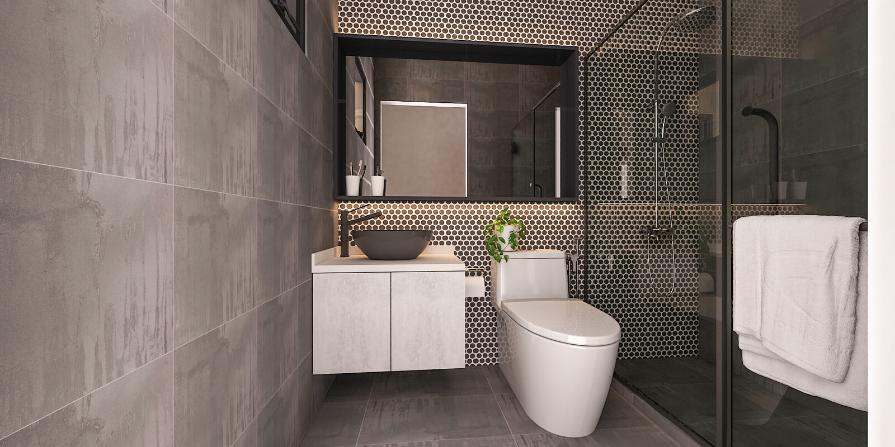

RESALE LAYOUT PLANNING
Plan a resale layout with evidence
Treat the source plan and the flat's lawfully observed condition as separate evidence. Record differences rather than forcing them to agree, then verify critical dimensions after possession.

ENQUIRY STATUS · LIVE
Our floor-plan enquiry journey is live. Upload your floor plan, choose your rooms and trades, and request an itemised contractor quote. This guide is educational: reading it does not start a job.
Before a viewing: identify the source, not a typical layout
Record the exact file or sheet you have: its source, flat or unit identity, issue date or revision if shown, page count, legibility and whether its symbols or notes are complete enough for the question being asked. Keep the original unchanged. Do not substitute a listing image, a remembered neighbour’s layout or a plan for another unit.
Start an uncertainty register:
- Which dimensions, walls, openings, fixtures and notes are explicitly shown?
- Which marks are unclear, cropped, missing or unsupported by a plan-specific legend?
- Is the revision or completeness unknown?
- Which questions concern later alterations, finishes, services, concealed conditions or defects that the source plan cannot establish?
- What must be observed, measured, checked against records or assessed by a qualified person?
OLD FLAT, OLD DRAWING
Age or flat type alone does not prove the present arrangement, condition, alteration history or feasibility of a proposed change. Treat every unsupported detail as a question, not a blank to fill.
Write the household brief without pretending fit is known
List the household’s activities, privacy and mobility needs, work or study patterns, storage categories, furniture worth retaining and likely changes. Rank each need as essential, preferred or deferrable. Then compare zones rather than committing to fitted dimensions:
- Circulation. Which everyday routes should stay direct and unobstructed?
- Storage. What needs frequent access, and near which activity?
- Adjacency. Which activities benefit from proximity or separation?
- Furniture zones. What approximate footprint and use space should be tested later?
- Simultaneous use. Where could doors, chairs, drawers or people compete for space?
These are planning prompts, not fit confirmation. Keep alternatives open where dimensions, openings, finishes or obstructions remain unverified.
During a viewing or other lawful observation
Observe only where and when you are lawfully permitted. Do not assume a right to measure, inspect, open, operate or disturb anything. Keep observations separate from conclusions and from transaction advice.
- Does an opening appear where the source shows one, and does its apparent position or operation need later measurement?
- Are visible walls, partitions, fixtures or built-ins consistent with the drawing, or simply not established by it?
- Are there visible service points or obstructions that need records and qualified checks?
- Are there signs that prompt a condition or defect question for an appropriate inspection, without diagnosing the cause?
- Could finishes or fitted items conceal boundaries, services or dimensions?
Use neutral language: “not shown”, “not observed”, “appears different”, “to verify”. A photograph or viewing note documents what was visible at that moment; it does not establish concealed condition, compliance, alteration history or construction feasibility.
Build a plan-versus-condition record
A simple record keeps the evidence honest. For each item, note what the source shows, what was lawfully observed, and what evidence comes next.
Do not convert “not shown” into “does not exist”, or an apparent discrepancy into proof of an alteration. Preserve the source, the observation date and who recorded it.
After possession: measure, check and revise
When you have lawful access and permission for the relevant activity, measure the conditions that control a decision using appropriate methods. Compare openings, boundaries, fixtures, obstructions and finished dimensions with the source and record discrepancies. Seek current official information and qualified assessment for structure, mechanical, electrical and plumbing systems, safety, accessibility, regulatory matters, defects and construction feasibility.
Revisit circulation, storage, adjacency and furniture zones using the measured evidence. Include product dimensions, tolerances and installation access where fit matters. If evidence conflicts with the proposal, correct the layout proposal and reassess every later layout or image. Do not protect an attractive option from inconvenient site evidence.
Keep six layers distinct
- Source plan. The exact identified drawing and its explicit content. It does not automatically describe the current physical flat.
- Observed existing condition. Dated, limited observations made during lawful access. Not a survey, inspection or concealed-condition finding.
- Plan-derived proposal. An early layout proposal with recorded uncertainty. It is not a measured record.
- Human-reviewed layout proposal. A versioned, correctable proposal reviewed by a person before it guides later 3D or layout work.
- Concept imagery. A visual aid for discussing a direction. It cannot override the reviewed layout proposal and is not dimensional evidence.
- Site, as-built and construction truth. Appropriate measurements, records, specifications, current official requirements and qualified assessments.
The first five do not guarantee the sixth. Everything plan-derived remains non-as-built, non-survey, non-inspection, non-construction and non-regulatory.
What to defer
Defer wall-removal conclusions, changes to openings or services, concealed-condition or defect conclusions, final fitted dimensions, furniture or appliance fit, structural, mechanical, electrical and plumbing decisions, regulatory conclusions, construction methods, procurement quantities, prices, timelines and commitments until the necessary measurements, records, current official information and qualified checks exist.
Deferral is useful: it identifies exactly what evidence must arrive before a decision becomes responsible.
FREQUENTLY ASKED
On plans, viewings and existing condition
Is an HDB resale floor plan an as-built record?
Do not treat it as one. Identify what the exact source explicitly shows, then compare it with lawfully observed and measured conditions. Site-, condition- and construction-dependent matters need appropriate evidence and checks.
Can I tell whether a wall can be removed from the plan or a viewing?
No conclusion should be made from this guide, a plan or appearance alone. Record the question and seek current official information and qualified assessment appropriate to the proposed work.
What if an opening appears different from the source plan?
Record the apparent discrepancy without diagnosing why it exists. Verify identity and revision, measure when lawfully permitted, check relevant records and obtain qualified advice where needed.
Should I diagnose defects during a viewing?
No. Record visible evidence neutrally and arrange an appropriate inspection or qualified assessment when authorised. Do not infer concealed condition or cause.
Can concept imagery confirm my furniture will fit?
No. A concept is not dimensional proof. Fit may depend on measured conditions, product specifications, tolerances, operation and installation access.
How is resale planning different from BTO planning?
This guide centres on comparing a source plan with an existing physical condition. The BTO guide owns the before-access planning lane. Neither turns a drawing or concept into site truth.
Can Home & Me review my resale plan now?
Yes. Start through the enquiry journey: upload your plan, pick rooms and trades, and request an itemised quote.
CONTINUE READING
This guide is educational. It is not construction, structural, mechanical, electrical, plumbing, regulatory or legal advice, and it does not price work. Questions? Contact us.